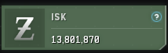
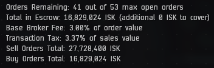

10/25/08 The First Update
It was a good first couple of days of trading in Dodixie. Using Eve Guru I was able t identify some opportunities to grow our small balance to a bigger one. The current challenge is getting Buy Orders filled so we have some stock to sell.
I did end up sending the ISK for skill training and spending the 1 Million referral skill points to go on and do the training for the Eve Uni market al skill plan. That knocked our tax rate down to around 3% which helps our margins.
Current Wallet

We're at 13,801,870 in the current wallet. While that's down around 5 million ISK it's important to note that's just the liquid ISK that we have currently.
Current Orders

Here's where the profits lie (in theory of course). We've got just shy of 17 million ISK tied up in escrow on our buy orders and another 27.7 million in sell orders outstanding.
Total Net Worth
We're looking at around 57 million ISK in net worth after two days of tradeing which is triple what we had to start. I need a better way of tracking this than screenshots and will need to do some research into tools that could be used.
Takeaway
A good start and I'm already starting to wonder about the possibilities in Dodixie. I haven't had the fluid ISK to be able to fully utilized Eve Guru's methods yet (I can't buy a full day's worth of stock of a product quite yet), but I don't know if there's the volume/opportunity in Dodixie to make the big bucks. I guess we'll find out.